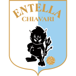

+EV Сигнали
Залози със стойност – само когато коефициентът е по-висок от честния. Всички резултати са публични. Обновено: 31.10.2026 02:06 · последна проверка на коефициентите: 30.10 18:30 · 🛠 Съобщи за грешка
Футболни прогнози за днес
Събота, 31 октомвриОбщо предложени залози за днес: 33% от банката в 33 сигнала. Ако залагаш, реши предварително колко най-много си готов да рискуваш за деня.

Virtus EntellaКак се смята: всеки залог е % от началната банка, без сложна лихва: от 29.10.2026 21:00 – фиксирани 1% на сигнал; пратените преди това – 1–3% според шанса (отчитат се, както са пратени). Доходност = сбор от печалбите и загубите в % от началната банка. ROI = доходност ÷ сбора на всички заложени % (и върнатите залози влизат в заложеното). Успеваемост = печеливши ÷ (печеливши + губещи) – върнатите не се броят. Най-голям спад = най-голямото падане от връх до дъно. Всички сигнали остават публични – и загубите. Методология › · По месеци ›
Подробно за сигналите
Отбелязвай с ✓ Заложих какво вече си заложил – вижда се само на твоето устройство.
⚽ Сигнали за днес · 31.1032 сигнала
- 31.10 03:00Мексико🚩 Корнери (Queretaro FC): Под 4.5📌 Пратен 30.10 07:24 · коефициент 2.20 · честен 2.07 (шанс 48.4%) · стойност при публикуване +6.4% · правила: v5 (от 29.10 22:00: 1X2 и „без равен“ – само наблюдение, залог 1%) · стойност при последната проверка (18:30, преди 8 ч) +3.7% – ⚠️ неактуална цена – провери коефициента📈 Честният коефициент се качи 2.07 → 2.12 (срещу нас)Залог: 1% от банката · ако мине: +1.20% банка📄 Прогноза за мача
Кратка причина
Защо точно този залог: честният коефициент по най-точния букмейкър е около 2.07, а се предлага 2.20 – с 6.4% над реалния шанс. Именно тази разлика е стойността, на която стъпва сигналът.
- 31.10 08:00Япония🚩 Корнери: Над 9.5📌 Пратен 30.10 09:33 · коефициент 1.97 · честен 1.88 (шанс 53.2%) · стойност при публикуване +4.8% · цената на букмейкъра е от 30.10 08:25 · правила: v5 (от 29.10 22:00: 1X2 и „без равен“ – само наблюдение, залог 1%) · стойност при последната проверка (18:30, преди 8 ч) +4.8% – ⚠️ неактуална цена – провери коефициента➖ Честният коефициент е без промяна (1.88)Залог: 1% от банката · ако мине: +0.97% банка📄 Прогноза за мача
Кратка причина
Защо точно този залог: честният коефициент по най-точния букмейкър е около 1.88, а се предлага 1.97 – с 4.8% над реалния шанс. Именно тази разлика е стойността, на която стъпва сигналът.
- 31.10 14:30Лига 1 (Англия)🚩 Корнери (Cambridge United): Под 5.5📌 Пратен 30.10 18:33 · коефициент 2.10 · честен 1.96 (шанс 51.1%) · стойност при публикуване +7.3% · цената на букмейкъра е от 30.10 09:51 · правила: v5 (от 29.10 22:00: 1X2 и „без равен“ – само наблюдение, залог 1%)Залог: 1% от банката · ако мине: +1.10% банка📄 Прогноза за мача
Кратка причина
Защо точно този залог: честният коефициент по най-точния букмейкър е около 1.96, а се предлага 2.10 – с 7.3% над реалния шанс. Именно тази разлика е стойността, на която стъпва сигналът.
- 31.10 14:30Лига 1 (Англия)🚩 Корнери (Reading FC): Под 4.5📌 Пратен 30.10 18:33 · коефициент 2.10 · честен 2.02 (шанс 49.6%) · стойност при публикуване +4.2% · цената на букмейкъра е от 29.10 01:44 · правила: v5 (от 29.10 22:00: 1X2 и „без равен“ – само наблюдение, залог 1%)Залог: 1% от банката · ако мине: +1.10% банка📄 Прогноза за мача
Кратка причина
Защо точно този залог: честният коефициент по най-точния букмейкър е около 2.02, а се предлага 2.10 – с 4.2% над реалния шанс. Именно тази разлика е стойността, на която стъпва сигналът.
- 31.10 14:30Лига 2 (Англия)🚩 Корнери (Port Vale): Над 5.5📌 Пратен 30.10 18:33 · коефициент 1.97 · честен 1.81 (шанс 55.3%) · стойност при публикуване +8.9% · цената на букмейкъра е от 30.10 09:50 · правила: v5 (от 29.10 22:00: 1X2 и „без равен“ – само наблюдение, залог 1%)Залог: 1% от банката · ако мине: +0.97% банка📄 Прогноза за мача
Кратка причина
Защо точно този залог: честният коефициент по най-точния букмейкър е около 1.81, а се предлага 1.97 – с 8.9% над реалния шанс. Именно тази разлика е стойността, на която стъпва сигналът.
- 31.10 15:00Турция🚩 Корнери (Kocaelispor): Над 4.5📌 Пратен 30.10 09:33 · коефициент 1.97 · честен 1.91 (шанс 52.4%) · стойност при публикуване +3.3% · цената на букмейкъра е от 30.10 08:24 · правила: v5 (от 29.10 22:00: 1X2 и „без равен“ – само наблюдение, залог 1%) · стойност при последната проверка (18:30, преди 8 ч) +3.3% – ⚠️ неактуална цена – провери коефициента➖ Честният коефициент е без промяна (1.91)Залог: 1% от банката · ако мине: +0.97% банка📄 Прогноза за мача
Кратка причина
Защо точно този залог: честният коефициент по най-точния букмейкър е около 1.91, а се предлага 1.97 – с 3.3% над реалния шанс. Именно тази разлика е стойността, на която стъпва сигналът.
- 31.10 15:00Лига 2🚩 Корнери (Montpellier HSC): Под 4.5📌 Пратен 30.10 18:33 · коефициент 2.10 · честен 1.91 (шанс 52.5%) · стойност при публикуване +10.2% · цената на букмейкъра е от 30.10 09:51 · правила: v5 (от 29.10 22:00: 1X2 и „без равен“ – само наблюдение, залог 1%)Залог: 1% от банката · ако мине: +1.10% банка📄 Прогноза за мача
Кратка причина
Защо точно този залог: честният коефициент по най-точния букмейкър е около 1.91, а се предлага 2.10 – с 10.2% над реалния шанс. Именно тази разлика е стойността, на която стъпва сигналът.
- 31.10 16:00Серия А🚩 Корнери (AC Monza): Под 3.5📌 Пратен 30.10 09:33 · коефициент 2.10 · честен 2.00 (шанс 49.9%) · стойност при публикуване +4.8% · цената на букмейкъра е от 30.10 07:10 · правила: v5 (от 29.10 22:00: 1X2 и „без равен“ – само наблюдение, залог 1%) · стойност при последната проверка (18:30, преди 8 ч) +4.6% – ⚠️ неактуална цена – провери коефициента➖ Честният коефициент е без промяна (2.01)Залог: 1% от банката · ако мине: +1.10% банка📄 Прогноза за мача
Кратка причина
Защо точно този залог: честният коефициент по най-точния букмейкър е около 2.00, а се предлага 2.10 – с 4.8% над реалния шанс. Именно тази разлика е стойността, на която стъпва сигналът.
- 31.10 16:00Серия Б🚩 Корнери: Над 9.5📌 Пратен 30.10 18:33 · коефициент 2.20 · честен 2.00 (шанс 50.0%) · стойност при публикуване +10.0% · цената на букмейкъра е от 30.10 02:01 · правила: v5 (от 29.10 22:00: 1X2 и „без равен“ – само наблюдение, залог 1%)Залог: 1% от банката · ако мине: +1.20% банка📄 Прогноза за мача
Кратка причина
Защо точно този залог: честният коефициент по най-точния букмейкър е около 2.00, а се предлага 2.20 – с 10.0% над реалния шанс. Именно тази разлика е стойността, на която стъпва сигналът.
- 31.10 16:00Серия Б🚩 Корнери (1-во п.в.): Над 4.5📌 Пратен 30.10 18:33 · коефициент 2.25 · честен 2.11 (шанс 47.3%) · стойност при публикуване +6.5% · цената на букмейкъра е от 30.10 02:01 · правила: v5 (от 29.10 22:00: 1X2 и „без равен“ – само наблюдение, залог 1%)Залог: 1% от банката · ако мине: +1.25% банка📄 Прогноза за мача
Кратка причина
Защо точно този залог: честният коефициент по най-точния букмейкър е около 2.11, а се предлага 2.25 – с 6.5% над реалния шанс. Именно тази разлика е стойността, на която стъпва сигналът.
- 31.10 16:00Швеция 2🚩 Корнери (GIF Sundsvall): Над 3.5📌 Пратен 30.10 09:33 · коефициент 1.97 · честен 1.86 (шанс 53.7%) · стойност при публикуване +5.7% · цената на букмейкъра е от 30.10 08:24 · правила: v5 (от 29.10 22:00: 1X2 и „без равен“ – само наблюдение, залог 1%) · стойност при последната проверка (18:30, преди 8 ч) +0.3% – ⚠️ неактуална цена – провери коефициента📈 Честният коефициент се качи 1.86 → 1.97 (срещу нас)Залог: 1% от банката · ако мине: +0.97% банка📄 Прогноза за мача
Кратка причина
Защо точно този залог: честният коефициент по най-точния букмейкър е около 1.86, а се предлага 1.97 – с 5.7% над реалния шанс. Именно тази разлика е стойността, на която стъпва сигналът.
- 31.10 16:30България🚩 Корнери: Над 9.5📌 Пратен 30.10 18:33 · коефициент 2.20 · честен 2.03 (шанс 49.3%) · стойност при публикуване +8.4% · цената на букмейкъра е от 30.10 09:51 · правила: v5 (от 29.10 22:00: 1X2 и „без равен“ – само наблюдение, залог 1%)Залог: 1% от банката · ако мине: +1.20% банка📄 Прогноза за мача
Кратка причина
Защо точно този залог: честният коефициент по най-точния букмейкър е около 2.03, а се предлага 2.20 – с 8.4% над реалния шанс. Именно тази разлика е стойността, на която стъпва сигналът.
- 31.10 17:00Лига 1 (Англия)🚩 Корнери: Под 11.5📌 Пратен 30.10 18:34 · коефициент 1.97 · честен 1.85 (шанс 54.1%) · стойност при публикуване +6.6% · цената на букмейкъра е от 30.10 05:17 · правила: v5 (от 29.10 22:00: 1X2 и „без равен“ – само наблюдение, залог 1%)Залог: 1% от банката · ако мине: +0.97% банка📄 Прогноза за мача
Кратка причина
Защо точно този залог: честният коефициент по най-точния букмейкър е около 1.85, а се предлага 1.97 – с 6.6% над реалния шанс. Именно тази разлика е стойността, на която стъпва сигналът.
- 31.10 17:00Лига 1 (Англия)🚩 Корнери (Milton Keynes Dons): Над 5.5📌 Пратен 30.10 09:33 · коефициент 1.97 · честен 1.79 (шанс 55.8%) · стойност при публикуване +10.0% · цената на букмейкъра е от 30.10 08:22 · правила: v5 (от 29.10 22:00: 1X2 и „без равен“ – само наблюдение, залог 1%) · стойност при последната проверка (18:30, преди 8 ч) +8.5% – ⚠️ неактуална цена – провери коефициента📈 Честният коефициент се качи 1.79 → 1.82 (срещу нас)Залог: 1% от банката · ако мине: +0.97% банка📄 Прогноза за мача
Кратка причина
Защо точно този залог: честният коефициент по най-точния букмейкър е около 1.79, а се предлага 1.97 – с 10.0% над реалния шанс. Именно тази разлика е стойността, на която стъпва сигналът.
- 31.10 17:00Лига 1 (Англия)🚩 Корнери: Под 10.5📌 Пратен 30.10 18:34 · коефициент 2.10 · честен 2.02 (шанс 49.6%) · стойност при публикуване +4.1% · цената на букмейкъра е от 30.10 02:01 · правила: v5 (от 29.10 22:00: 1X2 и „без равен“ – само наблюдение, залог 1%)Залог: 1% от банката · ако мине: +1.10% банка📄 Прогноза за мача
Кратка причина
Защо точно този залог: честният коефициент по най-точния букмейкър е около 2.02, а се предлага 2.10 – с 4.1% над реалния шанс. Именно тази разлика е стойността, на която стъпва сигналът.
- 31.10 17:00Лига 2 (Англия)🚩 Корнери: Над 9.5📌 Пратен 30.10 09:33 · коефициент 2.10 · честен 2.02 (шанс 49.5%) · стойност при публикуване +3.9% · цената на букмейкъра е от 30.10 08:25 · правила: v5 (от 29.10 22:00: 1X2 и „без равен“ – само наблюдение, залог 1%) · стойност при последната проверка (18:30, преди 8 ч) +4.0% – ⚠️ неактуална цена – провери коефициента➖ Честният коефициент е без промяна (2.02)Залог: 1% от банката · ако мине: +1.10% банка📄 Прогноза за мача
Кратка причина
Защо точно този залог: честният коефициент по най-точния букмейкър е около 2.02, а се предлага 2.10 – с 3.9% над реалния шанс. Именно тази разлика е стойността, на която стъпва сигналът.
- 31.10 17:00Белгия🚩 Корнери (Yellow-Red KV Mechelen): Над 4.5📌 Пратен 30.10 09:33 · коефициент 2.20 · честен 1.96 (шанс 51.1%) · стойност при публикуване +12.4% · цената на букмейкъра е от 30.10 08:22 · правила: v5 (от 29.10 22:00: 1X2 и „без равен“ – само наблюдение, залог 1%) · стойност при последната проверка (18:30, преди 8 ч) +9.6% – ⚠️ неактуална цена – провери коефициента📈 Честният коефициент се качи 1.96 → 2.01 (срещу нас)Залог: 1% от банката · ако мине: +1.20% банка📄 Прогноза за мача
Кратка причина
Защо точно този залог: честният коефициент по най-точния букмейкър е около 1.96, а се предлага 2.20 – с 12.4% над реалния шанс. Именно тази разлика е стойността, на която стъпва сигналът.
- 31.10 17:00Чемпиъншип🚩 Корнери (Swansea City): Под 5.5📌 Пратен 30.10 18:34 · коефициент 2.10 · честен 2.01 (шанс 49.8%) · стойност при публикуване +4.6% · цената на букмейкъра е от 29.10 13:39 · правила: v5 (от 29.10 22:00: 1X2 и „без равен“ – само наблюдение, залог 1%)Залог: 1% от банката · ако мине: +1.10% банка📄 Прогноза за мача
Кратка причина
Защо точно този залог: честният коефициент по най-точния букмейкър е около 2.01, а се предлага 2.10 – с 4.6% над реалния шанс. Именно тази разлика е стойността, на която стъпва сигналът.
- 31.10 17:00Чемпиъншип🚩 Корнери (1-во п.в.): Под 4.5📌 Пратен 30.10 18:34 · коефициент 2.25 · честен 2.17 (шанс 46.0%) · стойност при публикуване +3.6% · цената на букмейкъра е от 30.10 09:51 · правила: v5 (от 29.10 22:00: 1X2 и „без равен“ – само наблюдение, залог 1%)Залог: 1% от банката · ако мине: +1.25% банка📄 Прогноза за мача
Кратка причина
Защо точно този залог: честният коефициент по най-точния букмейкър е около 2.17, а се предлага 2.25 – с 3.6% над реалния шанс. Именно тази разлика е стойността, на която стъпва сигналът.
- 31.10 17:00Нешънъл лийг (Англия)🚩 Корнери: Под 9.5📌 Пратен 30.10 18:33 · коефициент 2.10 · честен 1.99 (шанс 50.3%) · стойност при публикуване +5.6% · цената на букмейкъра е от 30.10 17:54 · правила: v5 (от 29.10 22:00: 1X2 и „без равен“ – само наблюдение, залог 1%)Залог: 1% от банката · ако мине: +1.10% банка📄 Прогноза за мача
Кратка причина
Защо точно този залог: честният коефициент по най-точния букмейкър е около 1.99, а се предлага 2.10 – с 5.6% над реалния шанс. Именно тази разлика е стойността, на която стъпва сигналът.
- 31.10 17:30Португалия 2🚩 Корнери: Над 9.5📌 Пратен 30.10 09:33 · коефициент 2.20 · честен 2.11 (шанс 47.4%) · стойност при публикуване +4.2% · цената на букмейкъра е от 30.10 08:22 · правила: v5 (от 29.10 22:00: 1X2 и „без равен“ – само наблюдение, залог 1%) · стойност при последната проверка (18:30, преди 8 ч) +4.2% – ⚠️ неактуална цена – провери коефициента➖ Честният коефициент е без промяна (2.11)Залог: 1% от банката · ако мине: +1.20% банка📄 Прогноза за мача
Кратка причина
Защо точно този залог: честният коефициент по най-точния букмейкър е около 2.11, а се предлага 2.20 – с 4.2% над реалния шанс. Именно тази разлика е стойността, на която стъпва сигналът.
- 31.10 17:30Ередивизи🚩 Корнери (Fortuna Sittard): Над 2.5📌 Пратен 30.10 09:33 · коефициент 2.25 · честен 2.04 (шанс 49.1%) · стойност при публикуване +10.4% · цената на букмейкъра е от 30.10 08:24 · правила: v5 (от 29.10 22:00: 1X2 и „без равен“ – само наблюдение, залог 1%)Залог: 1% от банката · ако мине: +1.25% банка📄 Прогноза за мача
Кратка причина
Защо точно този залог: честният коефициент по най-точния букмейкър е около 2.04, а се предлага 2.25 – с 10.4% над реалния шанс. Именно тази разлика е стойността, на която стъпва сигналът.
- 31.10 17:30Португалия🚩 Корнери (Estrela Amadora): Над 4.5📌 Пратен 30.10 18:34 · коефициент 2.10 · честен 2.02 (шанс 49.5%) · стойност при публикуване +3.9% · цената на букмейкъра е от 30.10 02:03 · правила: v5 (от 29.10 22:00: 1X2 и „без равен“ – само наблюдение, залог 1%)Залог: 1% от банката · ако мине: +1.10% банка📄 Прогноза за мача
Кратка причина
Защо точно този залог: честният коефициент по най-точния букмейкър е около 2.02, а се предлага 2.10 – с 3.9% над реалния шанс. Именно тази разлика е стойността, на която стъпва сигналът.
- 31.10 18:00Австрия🚩 Корнери: Над 9.5📌 Пратен 30.10 18:34 · коефициент 2.20 · честен 1.98 (шанс 50.5%) · стойност при публикуване +11.2% · цената на букмейкъра е от 30.10 09:52 · правила: v5 (от 29.10 22:00: 1X2 и „без равен“ – само наблюдение, залог 1%)Залог: 1% от банката · ако мине: +1.20% банка📄 Прогноза за мача
Кратка причина
Защо точно този залог: честният коефициент по най-точния букмейкър е около 1.98, а се предлага 2.20 – с 11.2% над реалния шанс. Именно тази разлика е стойността, на която стъпва сигналът.
- 31.10 19:00Румъния🚩 Корнери: Над 9.5📌 Пратен 30.10 18:34 · коефициент 2.20 · честен 2.03 (шанс 49.3%) · стойност при публикуване +8.4% · цената на букмейкъра е от 30.10 02:03 · правила: v5 (от 29.10 22:00: 1X2 и „без равен“ – само наблюдение, залог 1%)Залог: 1% от банката · ако мине: +1.20% банка📄 Прогноза за мача
Кратка причина
Защо точно този залог: честният коефициент по най-точния букмейкър е около 2.03, а се предлага 2.20 – с 8.4% над реалния шанс. Именно тази разлика е стойността, на която стъпва сигналът.
- 31.10 19:30България🚩 Корнери (1-во п.в.): Под 4.5📌 Пратен 30.10 18:34 · коефициент 2.25 · честен 2.06 (шанс 48.4%) · стойност при публикуване +9.0% · цената на букмейкъра е от 29.10 16:08 · правила: v5 (от 29.10 22:00: 1X2 и „без равен“ – само наблюдение, залог 1%)Залог: 1% от банката · ако мине: +1.25% банка📄 Прогноза за мача
Кратка причина
Защо точно този залог: честният коефициент по най-точния букмейкър е около 2.06, а се предлага 2.25 – с 9.0% над реалния шанс. Именно тази разлика е стойността, на която стъпва сигналът.
- 31.10 20:00MLS🚩 Корнери (FC Cincinnati): Над 4.5📌 Пратен 30.10 09:33 · коефициент 2.10 · честен 1.90 (шанс 52.7%) · стойност при публикуване +10.6% · цената на букмейкъра е от 30.10 08:26 · правила: v5 (от 29.10 22:00: 1X2 и „без равен“ – само наблюдение, залог 1%)Залог: 1% от банката · ако мине: +1.10% банка📄 Прогноза за мача
Кратка причина
Защо точно този залог: честният коефициент по най-точния букмейкър е около 1.90, а се предлага 2.10 – с 10.6% над реалния шанс. Именно тази разлика е стойността, на която стъпва сигналът.
- 31.10 20:30Серия Б🚩 Корнери (Sampdoria Genoa): Над 4.5📌 Пратен 30.10 18:34 · коефициент 1.80 · честен 1.74 (шанс 57.5%) · стойност при публикуване +3.5% · цената на букмейкъра е от 30.10 02:01 · правила: v5 (от 29.10 22:00: 1X2 и „без равен“ – само наблюдение, залог 1%)Залог: 1% от банката · ако мине: +0.80% банка📄 Прогноза за мача
Кратка причина
Защо точно този залог: честният коефициент по най-точния букмейкър е около 1.74, а се предлага 1.80 – с 3.5% над реалния шанс. Именно тази разлика е стойността, на която стъпва сигналът.
- 31.10 21:00Бразилия Б🚩 Корнери: Под 11.5📌 Пратен 30.10 09:33 · коефициент 1.80 · честен 1.70 (шанс 58.9%) · стойност при публикуване +6.0% · цената на букмейкъра е от 30.10 08:19 · правила: v5 (от 29.10 22:00: 1X2 и „без равен“ – само наблюдение, залог 1%)Залог: 1% от банката · ако мине: +0.80% банка📄 Прогноза за мача
Кратка причина
Защо точно този залог: честният коефициент по най-точния букмейкър е около 1.70, а се предлага 1.80 – с 6.0% над реалния шанс. Именно тази разлика е стойността, на която стъпва сигналът.
- 31.10 22:00Ла Лига🚩 Корнери: Под 10.5📌 Пратен 30.10 18:34 · коефициент 2.10 · честен 2.03 (шанс 49.3%) · стойност при публикуване +3.6% · цената на букмейкъра е от 29.10 18:16 · правила: v5 (от 29.10 22:00: 1X2 и „без равен“ – само наблюдение, залог 1%)Залог: 1% от банката · ако мине: +1.10% банка📄 Прогноза за мача
Кратка причина
Защо точно този залог: честният коефициент по най-точния букмейкър е около 2.03, а се предлага 2.10 – с 3.6% над реалния шанс. Именно тази разлика е стойността, на която стъпва сигналът.
- 01.11 00:30Бразилия Б🚩 Корнери: Под 11.5📌 Пратен 30.10 09:33 · коефициент 1.77 · честен 1.67 (шанс 59.9%) · стойност при публикуване +6.1% · цената на букмейкъра е от 30.10 08:25 · правила: v5 (от 29.10 22:00: 1X2 и „без равен“ – само наблюдение, залог 1%)Залог: 1% от банката · ако мине: +0.77% банка📄 Прогноза за мача
Кратка причина
Защо точно този залог: честният коефициент по най-точния букмейкър е около 1.67, а се предлага 1.77 – с 6.1% над реалния шанс. Именно тази разлика е стойността, на която стъпва сигналът.
- 01.11 03:07Мексико🚩 Корнери: Под 10.5📌 Пратен 30.10 18:34 · коефициент 1.97 · честен 1.89 (шанс 53.0%) · стойност при публикуване +4.4% · цената на букмейкъра е от 30.10 08:25 · правила: v5 (от 29.10 22:00: 1X2 и „без равен“ – само наблюдение, залог 1%)Залог: 1% от банката · ако мине: +0.97% банка📄 Прогноза за мача
Кратка причина
Защо точно този залог: честният коефициент по най-точния букмейкър е около 1.89, а се предлага 1.97 – с 4.4% над реалния шанс. Именно тази разлика е стойността, на която стъпва сигналът.
Резултати
📈 Успеваемост по месеци · 📅 Прогнози по дни · 📘 Какво е +EV залог · 🧮 EV калкулатор
↘ 2.23 зелено – пазарът свали цената след нашия сигнал: хванали сме стойност преди другите.
↗ 2.38 червено – пазарът отиде срещу нас.
Числото е честният коефициент при затваряне: последните цени на Pinnacle за същия пазар, линия и избор малко преди мача, без маржа. „Потвърдил“ значи, че нашият коефициент е над този честен коефициент (CLV над 0). Това е полезен знак за реална стойност в дългосрочен план, но не доказва печалба сам по себе си.
Пазарът ни е потвърдил при 23 от 34 сигнала с наличен затварящ коефициент (68%). Общо сигнали: 56 – при останалите 22 няма затварящ коефициент (по-малки лиги и купи, които не следим до самия старт, или мачове, започнали преди следващата проверка).
Вчера · 30.10✅ 3 · ❌ 3 · доходност +0.00% · ⏳ 1 в игра
| Начало | Мач | Резултат | Избор | Коеф. | Залог % | Статус и печалба / загуба (% от банката) |
|---|---|---|---|---|---|---|
| 30.10 21:45 | AFC Fylde – Hornchurch FC | 3:1 ● край | Корнери: Над 10.5 | 2.20 | 1% | 🚩 корнери: няма данни ако мине: +1.20% |
| 30.10 22:00 | Sheffield United – Wrexham AFC | 1:0 | Корнери (Wrexham AFC): Под 4.5 | 2.10 | 1% | ✅ печеливш +1.10% |
| 30.10 21:45 | Newport County – Chesterfield FC | 4:1 | Корнери: Над 9.5 | 2.20 | 1% | ✅ печеливш +1.20% |
| 30.10 21:45 | SV Zulte Waregem – Club Brugge | 2:4 | Корнери: Над 10.5 | 2.20 | 1% | ✅ печеливш +1.20% |
| 30.10 21:00 | Stade Lavallois MFC – US Boulogne | 1:0 | Без равен: US Boulogne | 2.20 | 1% | ❌ губещ −1.00% |
| 30.10 12:00 | Asia Lion FC – Nay Pyi Taw | 0:1 | Голове: Над 2.5 | 1.72 | 1% | ❌ губещ −1.00% |
| 30.10 03:30 | Atletico Nacional – Independiente Santa Fe | 2:0 | Голове: Над 2.5 | 1.77 | 1.5% | ❌ губещ −1.50% |
29.10 · чет✅ 2 · ❌ 7 · ↩️ 2 · доходност −7.55%
| Начало | Мач | Резултат | Избор | Коеф. | Залог % | Статус и печалба / загуба (% от банката) |
|---|---|---|---|---|---|---|
| 29.10 21:45 | ACF Fiorentina – Atalanta BC | 2:2 | Корнери: Над 9.5 | 2.25 | 1% | ✅ печеливш +1.25% |
| 29.10 21:45 | Fiorentina – Atalanta | 2:2 | Голове: Под 3.5 | 1.68 ↗ 1.79 | 1.5% | ❌ губещ −1.50% |
| 29.10 21:00 | Boca Juniors de Cali – Union Magdalena | 1:1 | Без равен: Boca Juniors de Cali | 2.25 | 1% | ↩️ върнат +0.00% Равен резултат – при „без равен“ залогът се връща. |
| 29.10 20:45 | SC Braga – FC Famalicao | 2:2 | Голове: Под 2.5 | 1.97 | 1.5% | ❌ губещ −1.50% |
| 29.10 20:00 | Al-Riyadh SC – Al Qadsiah | 0:6 | Корнери: Под 10.5 | 2.20 | 1% | ✅ печеливш +1.20% |
| 29.10 19:00 | Kuopion Palloseura – IF Gnistan | 1:1 | Корнери (Kuopion Palloseura): Под 6.5 | 1.80 | 1.5% | ❌ губещ −1.50% |
| 29.10 19:00 | Maghreb AS de Fes – Rs Berkane | 0:0 | Без равен: Maghreb AS de Fes | 1.63 | 2% | ↩️ върнат +0.00% Равен резултат – при „без равен“ залогът се връща. |
| 29.10 17:00 | CS Concordia Chiajna – ACS Sepsi OSK Sfantu Gheorghe | 1:1 | Голове: Над 2.5 | 1.87 | 1.5% | ❌ губещ −1.50% |
| 29.10 05:00 | Club América – Club Tijuana | 1:1 | Победа: Club América | 1.51 ↘ 1.43 | 2% | ❌ губещ −2.00% |
| 29.10 04:30 | Seattle Sounders – Houston Dynamo | 0:1 | Корнери (1-во п.в.): Под 4.5 | 2.20 ↘ 2.07 | 1% | ❌ губещ −1.00% |
| 29.10 00:30 | Red Bull Bragantino SP – Chapecoense SC | 3:0 | Голове: Над 3.5 | 1.96 ↘ 1.93 | 1% | ❌ губещ −1.00% |
28.10 · ср✅ 8 · ❌ 6 · ↩️ 3 · доходност +2.43%
| Начало | Мач | Резултат | Избор | Коеф. | Залог % | Статус и печалба / загуба (% от банката) |
|---|---|---|---|---|---|---|
| 28.10 22:00 | Liverpool FC – Chelsea FC | 1:1 | Без равен: Chelsea FC | 2.20 ↘ 2.10 | 1% | ↩️ върнат +0.00% Равен резултат – при „без равен“ залогът се връща. |
| 28.10 21:45 | Fulham FC – Crystal Palace | 0:1 | Корнери (Crystal Palace): Под 3.5 | 2.20 ↘ 2.06 | 1% | ✅ печеливш +1.20% |
| 28.10 21:45 | St. Johnstone FC – Motherwell FC | 2:2 | Корнери: Под 9.5 | 2.20 | 1% | ❌ губещ −1.00% |
| 28.10 21:45 | Aberdeen FC – Falkirk FC | 0:1 | Корнери (Aberdeen FC): Над 5.5 | 1.87 ↘ 1.86 | 1.5% | ❌ губещ −1.50% |
| 28.10 21:45 | Celtic Glasgow – Dundee United | 2:2 | Корнери (Dundee United): Над 3.5 | 2.20 ↘ 2.00 | 1% | ✅ печеливш +1.20% |
| 28.10 21:45 | Bayer Leverkusen – 1 FC Nuremberg | 5:2 | Корнери: Под 9.5 | 2.20 ↘ 2.18 | 1% | ❌ губещ −1.00% |
| 28.10 21:45 | Bayer 04 Leverkusen – 1. FC Nürnberg | 5:2 | Победа: Bayer 04 Leverkusen | 1.24 | 3% | ✅ печеливш +0.72% |
| 28.10 21:45 | AFC Bournemouth – Aston Villa | 3:0 | Повече картони: AFC Bournemouth | 2.40 ↘ 2.35 | 1% | ❌ губещ −1.00% |
| 28.10 21:45 | Holstein Kiel – TSG Hoffenheim | 1:1 | Корнери (1-во п.в.): Под 4.5 | 2.20 ↗ 2.21 | 1% | ❌ губещ −1.00% |
| 28.10 21:30 | Manchester City – Brighton & Hove Albion | 2:2 | Без равен: Manchester City | 1.33 ↗ 1.47 | 3% | ↩️ върнат +0.00% Равен резултат – при „без равен“ залогът се връща. |
| 28.10 21:00 | Juve Stabia – Hellas Verona | 0:1 | Корнери: Над 9.5 | 2.10 ↘ 2.03 | 1% | ✅ печеливш +1.10% |
| 28.10 20:00 | IFK Goteborg – Djurgardens IF | 1:1 | Корнери: Под 11.5 | 1.77 ↘ 1.69 | 1.5% | ✅ печеливш +1.16% |
| 28.10 20:00 | CD Tarancon – Levante UD | – | Голове (Levante UD) (1-во п.в.): Над 1.5 | 2.20 | 1% | ↩️ върнат +0.00% Мачът е отменен – по правилата залогът се връща. |
| 28.10 19:30 | Venezia FC – Inter Milano | 0:2 | Корнери: Над 9.5 | 2.25 ↘ 2.13 | 1% | ❌ губещ −1.00% |
| 28.10 19:00 | Dynamo Dresden – Schalke 04 | 2:0 | Корнери: Под 9.5 | 2.25 ↘ 2.14 | 1% | ✅ печеливш +1.25% |
| 28.10 18:00 | AC Oulu – Vaasan Palloseura | 0:0 | Корнери (1-во п.в.): Над 4.5 | 2.20 ↘ 2.10 | 1% | ✅ печеливш +1.20% |
| 28.10 01:00 | Ceara SC CE – Goias EC GO | 0:2 | Корнери (Goias EC GO): Над 4.5 | 2.10 ↘ 1.85 | 1% | ✅ печеливш +1.10% |
27.10 · вт✅ 11 · ❌ 4 · доходност +6.93%
| Начало | Мач | Резултат | Избор | Коеф. | Залог % | Статус и печалба / загуба (% от банката) |
|---|---|---|---|---|---|---|
| 27.10 21:45 | 1. FC Cologne – Union Berlin | 5:0 | Корнери (1. FC Cologne): Под 5.5 | 2.10 ↗ 2.15 | 1% | ✅ печеливш +1.10% |
| 27.10 21:45 | Borussia Dortmund – Werder Bremen | 3:2 | Корнери: Под 9.5 | 2.25 ↘ 2.23 | 1% | ✅ печеливш +1.25% |
| 27.10 21:45 | SV 07 Elversberg – SV Darmstadt 98 | 0:2 | Корнери: Под 9.5 | 2.25 ↗ 2.38 | 1% | ❌ губещ −1.00% |
| 27.10 21:45 | Borussia M'gladbach – Karlsruher SC | 2:0 | Победа: Borussia M'gladbach | 1.42 ↗ 1.48 | 2% | ✅ печеливш +0.84% |
| 27.10 21:45 | Leicester City – Wigan Athletic | 3:0 | Корнери (Wigan Athletic): Под 4.5 | 1.80 | 1.5% | ✅ печеливш +1.20% |
| 27.10 21:45 | Sheffield Wednesday – Cambridge United | 1:1 | Корнери: Над 10.5 | 2.20 ↘ 2.19 | 1% | ✅ печеливш +1.20% |
| 27.10 21:45 | Luton Town – Doncaster Rovers | 3:1 | Корнери: Под 10.5 | 2.10 ↗ 2.12 | 1% | ✅ печеливш +1.10% |
| 27.10 21:45 | Milton Keynes Dons – Bromley FC | 4:1 | Корнери: Над 10.5 | 2.20 ↘ 2.07 | 1% | ✅ печеливш +1.20% |
| 27.10 21:45 | Barnet FC – York City FC | 3:1 | Корнери: Над 10.5 | 2.20 ↘ 2.11 | 1% | ❌ губещ −1.00% |
| 27.10 21:00 | Virtus Entella – US Avellino | 1:1 | Корнери: Над 8.5 | 1.77 ↘ 1.75 | 1.5% | ❌ губещ −1.50% |
| 27.10 19:00 | SG Sonnenhof Grossaspach – FC Augsburg | 2:4 | Корнери: Под 10.5 | 2.10 ↗ 2.13 | 1% | ✅ печеливш +1.10% |
| 27.10 19:00 | Rot-Weiss Essen – RB Leipzig | 1:2 | Корнери: Под 10.5 | 1.97 ↗ 2.02 | 1% | ❌ губещ −1.00% |
| 27.10 19:00 | Rot-Weiss Essen – RB Leipzig | 1:2 | Победа: RB Leipzig | 1.22 ↘ 1.19 | 3% | ✅ печеливш +0.66% |
| 27.10 01:30 | Juventude – Náutico | 4:0 | Победа: Juventude | 1.54 ↘ 1.52 | 2% | ✅ печеливш +1.08% |
| 27.10 01:00 | Flamengo – Atlético Mineiro | 3:2 | Победа: Flamengo | 1.35 ↘ 1.33 | 2% | ✅ печеливш +0.70% |
26.10 · пон✅ 1 · ❌ 1 · доходност −1.34%
| Начало | Мач | Резултат | Избор | Коеф. | Залог % | Статус и печалба / загуба (% от банката) |
|---|---|---|---|---|---|---|
| 26.10 20:45 | Santa Clara – Benfica | 1:2 | Победа: Benfica | 1.33 ↗ 1.39 | 2% | ✅ печеливш +0.66% |
| 26.10 20:00 | FC København – Odense Boldklub | 1:1 | Победа: FC København | 1.45 ↗ 1.52 | 2% | ❌ губещ −2.00% |
25.10 · нед✅ 3 · ❌ 0 · доходност +2.75%
| Начало | Мач | Резултат | Избор | Коеф. | Залог % | Статус и печалба / загуба (% от банката) |
|---|---|---|---|---|---|---|
| 25.10 20:15 | Molde FK – Fredrikstad FK | 5:1 | Победа: Molde FK | 1.40 | 2% | ✅ печеливш +0.80% |
| 25.10 18:30 | SC Freiburg – Bayern Munich | 1:3 | Победа: Bayern Munich | 1.48 | 2% | ✅ печеливш +0.96% |
| 25.10 09:00 | FC Tokyo – Mito Hollyhock | 6:0 | Победа: FC Tokyo | 1.33 | 3% | ✅ печеливш +0.99% |
24.10 · съб✅ 1 · ❌ 0 · доходност +0.96%
| Начало | Мач | Резултат | Избор | Коеф. | Залог % | Статус и печалба / загуба (% от банката) |
|---|---|---|---|---|---|---|
| 24.10 21:45 | Lazio – Parma | 2:1 | Победа: Lazio | 1.48 | 2% | ✅ печеливш +0.96% |
ROI по периоди
| Период | Сигнали | Печ. / губ. / върн. | Доходност | ROI |
|---|---|---|---|---|
| Днес | 0 | – | – | – |
| Вчера | 6 | 3 / 3 / 0 | +0.00% | +0.0% |
| Последните 7 дни | 54 | 28 / 21 / 5 | +3.22% | +4.3% |
| Последните 30 дни | 55 | 29 / 21 / 5 | +4.18% | +5.4% |
| Този месец | 55 | 29 / 21 / 5 | +4.18% | +5.4% |
| Общо | 55 | 29 / 21 / 5 | +4.18% | +5.4% |
Как да използваш сигналите
⚠️Прочети преди да залагашСигналите са информационни оценки, не гаранция за печалба (натисни)
1Рискът е реален
Вероятностите са оценки и могат да грешат, коефициентите се менят, а всеки залог може да загуби цялата заложена сума. Серии от 3–5 губещи залога са нормални. Положителна стойност означава предимство само при много залози, не при един.
2Не залагай с пари за ежедневни нужди
Ако решиш да участваш, определи предварително лимит, който можеш да си позволиш да загубиш изцяло. Не добавяй към него след загуба.
3Размер на залога
От 29.10.2026 отчитаме всеки сигнал с фиксирани 1% от началната банка – еднакво за всички, а с по един сигнал на мач и общият залог за мач е 1%. Процентът не се вдига след загуби. Това е как водим статистиката, не гаранция за безопасен риск.
4Провери коефициента
Стойността е в цената. Ако при твоя букмейкър коефициентът е по-нисък от посочения, стойността може да я няма – тогава е по-добре да пропуснеш. При „🔍 Кандидат“ задължително провери коефициента.
5Не е нужно да играеш всеки сигнал
Няма задължение да следваш всичко. Само имай предвид, че нашата статистика е за всички сигнали заедно – ако избираш само част, твоят резултат може да е различен.
6Без гонене на загуби
Никога не увеличавай залога, за да си върнеш загубеното. Ако залагането престане да е забавление или започне да ти тежи – спри и потърси помощ.
Само информация, не е съвет за залагане. Само за пълнолетни (18+). Методология и правила ›
Калкулатор на банката
Как работим
Партньори
Отделно от сигналите – реферални и партньорски линкове, от които сайтът получава малко приход.
 HoneygainПлаща ти за неизползвания интернет – телефон или компютър, работи само във фона.Регистрирай се →💸 допълнителен доход · реферален линк
HoneygainПлаща ти за неизползвания интернет – телефон или компютър, работи само във фона.Регистрирай се →💸 допълнителен доход · реферален линк Pawns.appСподеляш интернет и попълваш кратки анкети – изплащане през PayPal или крипто.Регистрирай се →💸 допълнителен доход · реферален линк
Pawns.appСподеляш интернет и попълваш кратки анкети – изплащане през PayPal или крипто.Регистрирай се →💸 допълнителен доход · реферален линк ADIDAS обувки за футбол Mundial Team Turf, черни138,05 €Виж в Decathlon →
ADIDAS обувки за футбол Mundial Team Turf, черни138,05 €Виж в Decathlon → KIPSTA футболна топка Light Learning Ball, размер 56,99 €Виж в Decathlon →
KIPSTA футболна топка Light Learning Ball, размер 56,99 €Виж в Decathlon → KIPSTA детски обувки за футбол 100 Easy AG/FG11,99 €Виж в Decathlon →
KIPSTA детски обувки за футбол 100 Easy AG/FG11,99 €Виж в Decathlon → KIPSTA футболна топка Softball XLight, размер 55,49 €Виж в Decathlon →
KIPSTA футболна топка Softball XLight, размер 55,49 €Виж в Decathlon → KIPSTA детски обувки за футзал Sala Club Easy18,40 €Виж в Decathlon →
KIPSTA детски обувки за футзал Sala Club Easy18,40 €Виж в Decathlon → KIPSTA футболна топка Sunny 300, размер 43,49 €Виж в Decathlon →
KIPSTA футболна топка Sunny 300, размер 43,49 €Виж в Decathlon → KIPSTA детски обувки за футзал 100, сини11,96 €Виж в Decathlon →
KIPSTA детски обувки за футзал 100, сини11,96 €Виж в Decathlon → KIPSTA помпа за топка Essentiel5,99 €Виж в Decathlon →
KIPSTA помпа за топка Essentiel5,99 €Виж в Decathlon →💸 Допълнителен доход
Две безплатни приложения, които плащат за неизползвания ти интернет: инсталираш ги, оставяш ги да работят и трупаш по малко всеки ден – без да правиш нищо.
Как работят: споделят част от интернет връзката ти (за проучвания на пазара и проверка на реклами) или ти плащат за кратки анкети. Печалбата е скромна – обикновено няколко евро на месец – и зависи от държавата и връзката. Прочети условията им преди да инсталираш. Това са наши реферални линкове – ако се регистрираш през тях, получаваме малък бонус, а за теб нищо не се променя.
Реклама и партньорства
✉️ Пиши за реклама